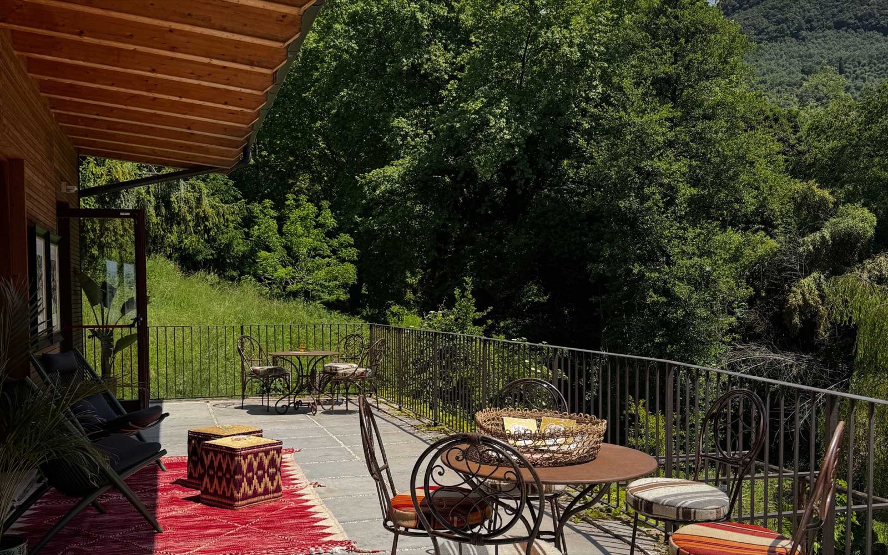
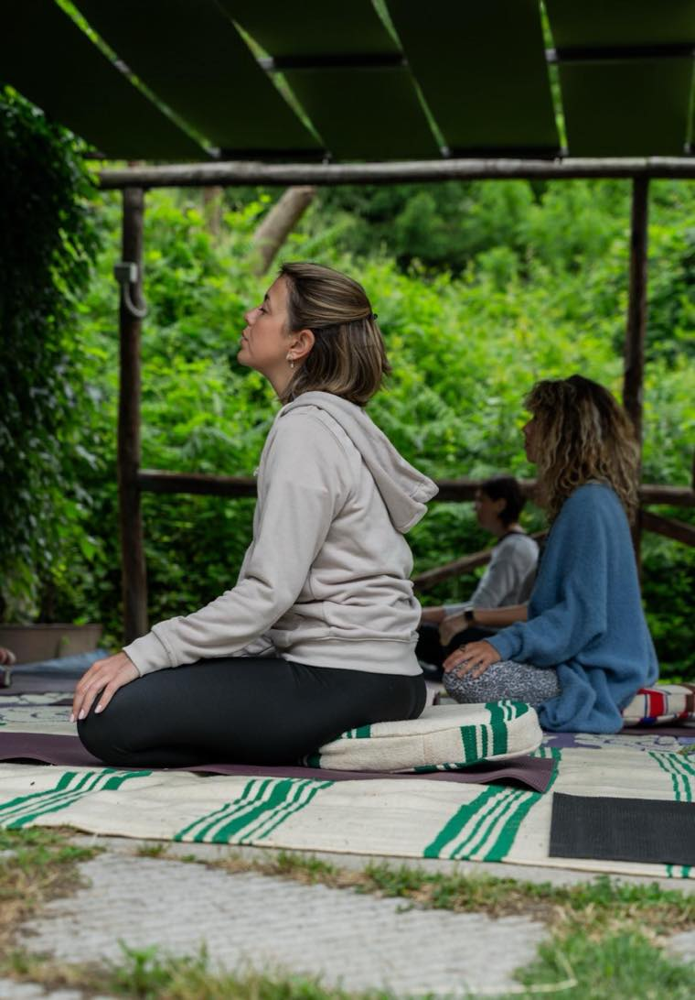
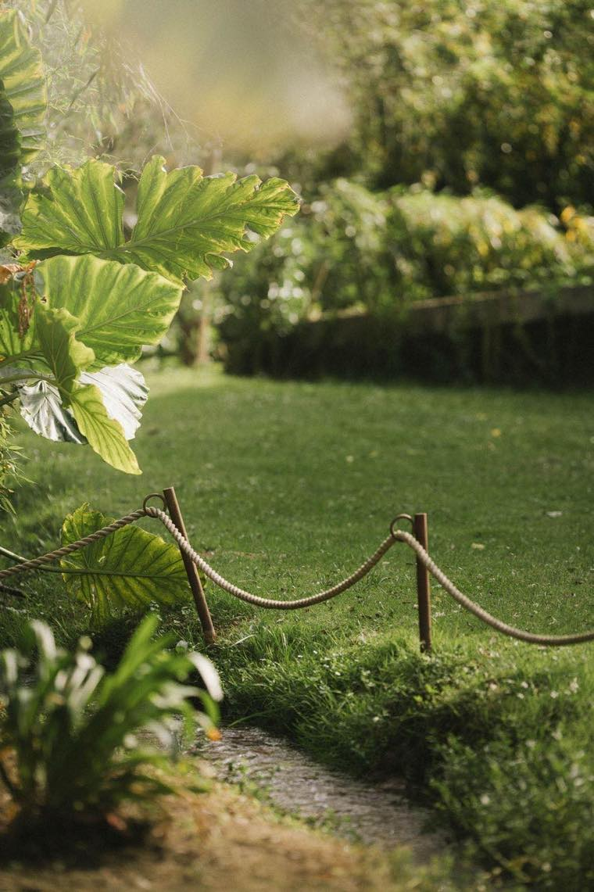
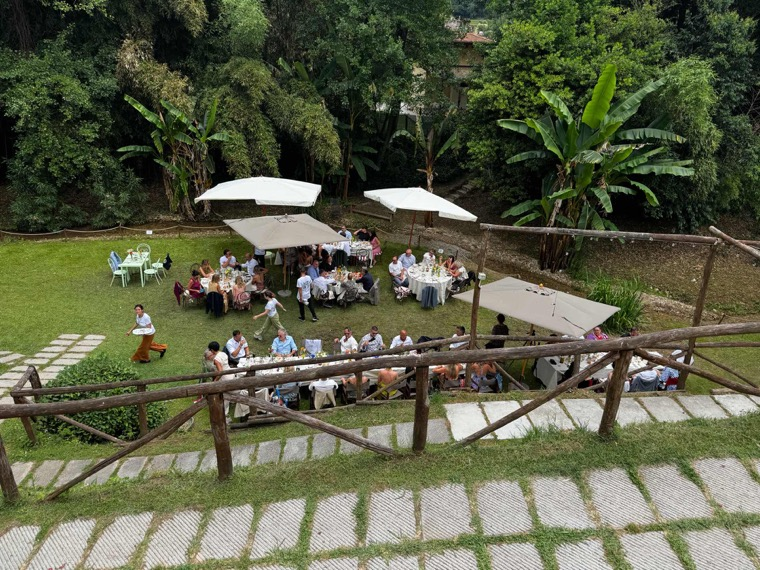

Chinesiologo · Libra · Pietrasanta
Stare bene nel proprio corpo, il più a lungo possibile.
Aiuto le persone over 50 a tornare a camminare e vivere in autonomia, con un allenamento su misura anche in natura.

Tappa 1 · Chi sono
Sono Simone, chinesiologo.
Lavoro a Libra, a Pietrasanta, con le persone che vogliono continuare a fare le loro cose da sole: camminare, salire le scale, viaggiare, stare con i nipoti.
Prima di qualsiasi esercizio ti faccio una domanda: cosa vorresti tornare a fare? Da quella risposta costruiamo il percorso.
{{Due righe sulla tua storia: perché hai scelto questo lavoro.}}

Tappa 2 · Il metodo
La longevità, per me
Muoversi in modo naturale, all'aria aperta, per stare bene nel proprio corpo il più a lungo possibile.
Dentro ci sono la forza, l'equilibrio, la mobilità e la fiducia nel proprio corpo: tutto ciò che serve per invecchiare bene. Senza macchinari complicati e senza promesse miracolose.
- Si parte dalla tua vita. L'obiettivo è una cosa che vuoi tornare a fare, non un numero.
- Su misura, ogni giorno. Ogni sessione comincia con una domanda: come stai oggi?
- Anche in natura. Nel verde e nella sabbia di Libra, dove il corpo si muove come nella vita vera.
- Accanto ai professionisti. Quando serve, lavoro insieme al tuo fisioterapista e al tuo medico.
Tappa 3 · I gesti della longevità
Alcuni gesti di tutti i giorni dicono molto del tuo corpo.
Alzarsi dalla sedia senza aiutarsi con le mani. Sedersi per terra e tornare in piedi. Fare le scale senza fermarsi.
Presto qui troverai un piccolo percorso per osservarli con calma, da solo o insieme a un tuo genitore. Non è un test medico: è un modo per capire da dove partire.
In arrivo

Tappa 4 · Libra
Un piccolo posto immerso nella natura.
Libra Terra Creativa è uno spazio nel verde di Pietrasanta, con piante tropicali, un giardino e una zona di allenamento all'aperto nella sabbia. Un posto dove tornare all'essenziale e sentirsi a casa.
Via Santa Maria 33, Pietrasanta (LU)
Scopri Libra
Tappa 5 · Storie
Le persone che sono tornate alle loro cose.
Qui racconteremo storie vere di chi si allena a Libra, con il loro permesso. Le prime arriveranno presto.
Tappa 6 · Domande frequenti
Le domande che mi fanno più spesso
Alla mia età non è troppo tardi?
Il corpo continua ad adattarsi a ogni età, se gli dai il tempo giusto. Si parte da dove sei oggi, con gradualità.
Ho paura di farmi male.
È una paura comprensibile, soprattutto dopo un intervento o una caduta. Si comincia da gesti semplici, con un appoggio e con me accanto, e si va avanti solo quando ti senti sicuro.
Non sono il tipo da palestra.
Libra non è una palestra: è un posto nel verde, piccolo e tranquillo. Spesso ci alleniamo all'aperto.
Ho già fatto fisioterapia. Mi serve ancora?
Quando la fisioterapia è finita, a volte forza e sicurezza vanno ancora costruite per tornare alle tue attività. In quel caso il mio lavoro continua quello del fisioterapista, non lo sostituisce.
Come funziona il primo incontro?
Ti ascolto: cosa fai, cosa vorresti tornare a fare. Poi osservo come cammini, come ti alzi, come stai in equilibrio, sempre vicino a un appoggio. Da lì capiamo insieme da dove partire.
In cima al percorso
Richiedi il primo incontro.
Scrivi alla segreteria: ti spieghiamo come funziona e troviamo insieme il giorno giusto.
{{Numero WhatsApp della segreteria}}
Presto sul sito
La richiesta di appuntamento online, i pacchetti di lezioni e l'area clienti, riservati a chi si registra.